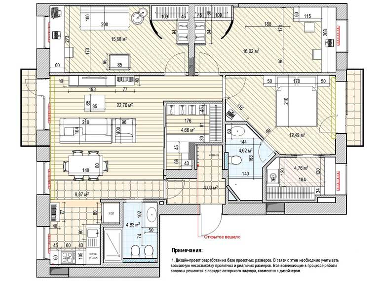

Варианты планировочных решений

В основі роботи над планувальними рішеннями лежить форма технічного завдання, яку спільно заповнюють замовник і дизайнер. На даному етапі, а також в подальшому, під час обговорення варіантів планування, для максимальної продуктивності необхідний живий діалог, оскільки тільки особисте спілкування дає можливість зняти цілий ряд питань, оперативно отримати необхідні роз'яснення і врахувати специфічні нюанси, які є в кожному проекті.
На базі техзавдання, планів БТІ і обмірних плану створюються кілька варіантів планувальних рішень, які відрізняються один від одного і в сукупності дозволяють замовнику оцінити потенціал його квартири або будинку. Кожен такий концепт прив'язаний не тільки до правил і норм, а й, звичайно, до розташування комунікацій і несучих стін, тому всі пропоновані ідеї перепланувань, якщо такі взагалі можливі, згодом можна втілити в життя, а також узгодити в відповідних інстанціях.
Потрібно розуміти, що відразу отримати ідеальне рішення не вийде. Всі варіанти будуть володіти власними плюсами і мінусами, а підсумкова планування народиться з обговорень запропонованих рішень і пошуку компромісів між бажаннями замовника і можливостями його квартири або будинку.